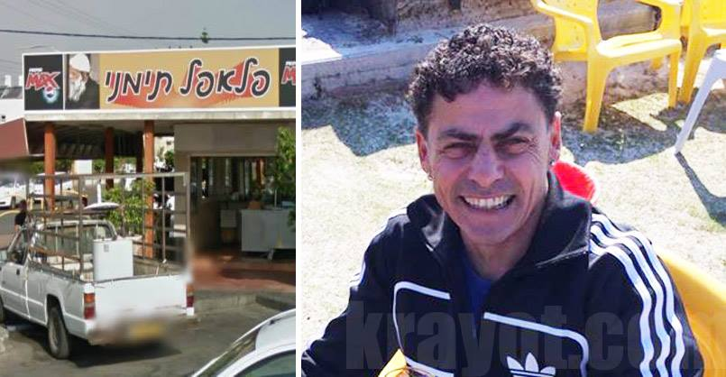

דף הפייסבוק "שטראוס עלית לנו ביוקר" נפתח כמחאת זעם וקריאה לחרם המוני על מוצרי שטראוס-עלית לאחר שהתברר לנו פער המחירים בין ישראל לארצות הברית במוצר הדגל של החברה, החטיף "פסק זמן".
חברת שטראוס-עלית מנצלת את כוחה כמונופול וגובה מאיתנו מחירים גבוהים בכל מוצריה. כאן ובדף הפייסבוק אנו ממשיכים לעקוב ולפרסם את מחירי העושק כדי שהציבור ידע ויחליט את מי הוא מפרנס ומה יעשה בכספו.
פער מחירים מקומם בין מוצר מיובא לבין תוצרת שטראוס עלית
למה שנקנה "כחול לבן" כאשר מוצר זהה (יש אף יגידו יותר טוב) מחו"ל עולה פחות? הנה דוגמא נוספת לחזירות המקוממת של תאגידי המזון בישראל: 3 יחידות חטיף תוצרת שטראוס-עלית נמכר ב - 12 ש"ח (4 ש"ח לחטיף), לעומת זאת 4 יחידות חטיף תוצרת חו"ל נימכר ב - 10 ש"ח (2.5 ש"ח לחטיף). אז עוד יש ביננו פראיירים שמוכנים לקנות שטראוס עלית?? העיניין הזה חייב להפסיק
(תודה ל Sagi Nave ששלח לנו את הצילום)
עוד דוגמה לניצול כוחו של מונופול דורסני
אגודת הסטודנטים של מכללת ספיר יזמה לפני כחודש את הקמת 'קפה אמון' עמדת קפה לרווחת הסטודנטים הפועלת על בסיס אמון, כאשר הסטודנטים משלמים כאוות נפשם והרווחים מועברים לטובת קניית המוצרים לימים הבאים. חברת עלית, המפעילה קפיטריה במכללה, לא קיבלה בעין יפה את המהלך של האגודה והחליטה כ-3 שבועות בלבד לאחר פתיחת 'קפה אמון' לאיים בתביעה כנגד המכללה בגין פגיעה ברווחיה. כפועל יוצא מכך – עלית גם דרשה לסגור לאלתר את העמדה. לנוכח האיום של התאגיד, החליטה המכללה להתקפל וסגרה את העמדה, למורת רוחם של הסטודנטים. אך אלה לא נשארו חייבים ופצחו בקמפיין החרמה כנגד החברה, המהלך כולל
סרטון "עושק מורשה"אשר מופץ בימים אלו ברשת, הפגנה מול הקפיטריה של עלית, קבוצת תמיכה בפייסבוק והחרמת מוצרי החברה .
תראו את המחיר, זה בכיכר אורדע רמת גן,
ובצמוד יש עוד דוכן עם מחירים תואמים,
כשרוצים מסתבר. שאפשר.

הפלאפל התימני בקרית מוצקין
יוסי בס כותב: "בדרך הביתה מהבסיס עצרנו לאכול עם חבר בפלאפל תימני בקרית מוצקין. אחרי שסיימנו (ללקק את האצבעות אגב) ושאלתי "כמה זה", ענה לי המוכר "אצלי חיילים לא משלמים שקל. הכל עלי". למרות שהתנגדנו, הוא התעקש וסירב לקחת תשלום.
מישהו במקום סיפר לנו שזה לא פעם ראשונה שכך מתנהג הבעלים עם חיילים וכבר פורסמו עליו כמה סיפורים מרגשים בפייסבוק, בזמן שלו עצמו אין כלל פייסבוק. אז קבלו אותו: מאיר בן עזרא הצדיק!"